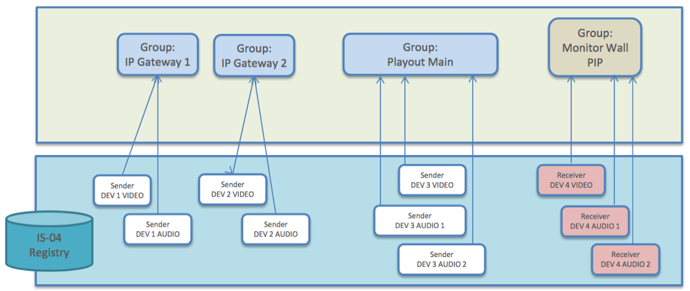

AMWA BCP-002-01: Best Current Practice for Natural Grouping of NMOS Resources
Scope
This Best Current Practice specifies how to indicate within NMOS APIs that NMOS Resources contained within a Node or a Device form a Natural Group, and how to indicate the roles of each member of the Natural Group.
"Natural Group" is explained below and defined formally in Definitions.
Introduction (informative)
Often there is a requirement for NMOS client applications to work with Groups of related Resources used in NMOS specifications. For example, IS-05's bulk mode allows multiple connections to be make or broken at the same time; typically there will be some relationship between these connections, for example the Receivers are all in the same wall of multiviewers, or the Senders are all located in a particular Studio. Prior to the creation of this Best Current Practice, there was no defined way of indicating any grouping relationship within the API calls.
In many cases it is just necessary to provide a way of referring to a Group that is "formed naturally" by what a system does, and these are called "Natural Group". For example, a Node that corresponds to a camera might have a Natural Group called "Camera", and there are three Senders within this Natural Group, with Roles "Video", "Audio 1" and "Audio 2".
In this Best Current Practice, Nodes add a grouphint tag to the JSON representation
of each member of a Natural Groups. The details are specified in the NMOS Parameter Registers, specifically here.
In some cases a group may be defined by a user or automation system rather than by the Node itself; for example a "Stadium Cameras" Group. Such cases are not in scope of this current document.
The following diagram shows four more examples of Natural Groups:

Use of Normative Language
The key words "MUST", "MUST NOT", "REQUIRED", "SHALL", "SHALL NOT", "SHOULD", "SHOULD NOT", "RECOMMENDED", "MAY", and "OPTIONAL" in this document are to be interpreted as described in RFC 2119.
Normative References
These appear at the end of the Markdown source for this document, and are referenced as hyperlinks within the main body.
Definitions
See also the NMOS Glossary, and definitions within RFCs.
Group
A collection of NMOS Resources.
Natural Group
A Group that represents the default relationship between Resources in a Node.
Role
An attribute of a Resource that identifies it within a Natural Group
(Group) Scope
An attribute of a Group that limits its scope. This can be either Node or Device.
Tagging Natural Groups (normative)
Node implementations following this Best Current Practice MUST use the grouphint tag as defined in the NMOS Parameters Registers to indicate Natural Groups.
Node implementations SHALL NOT require API clients to use other mechanisms.